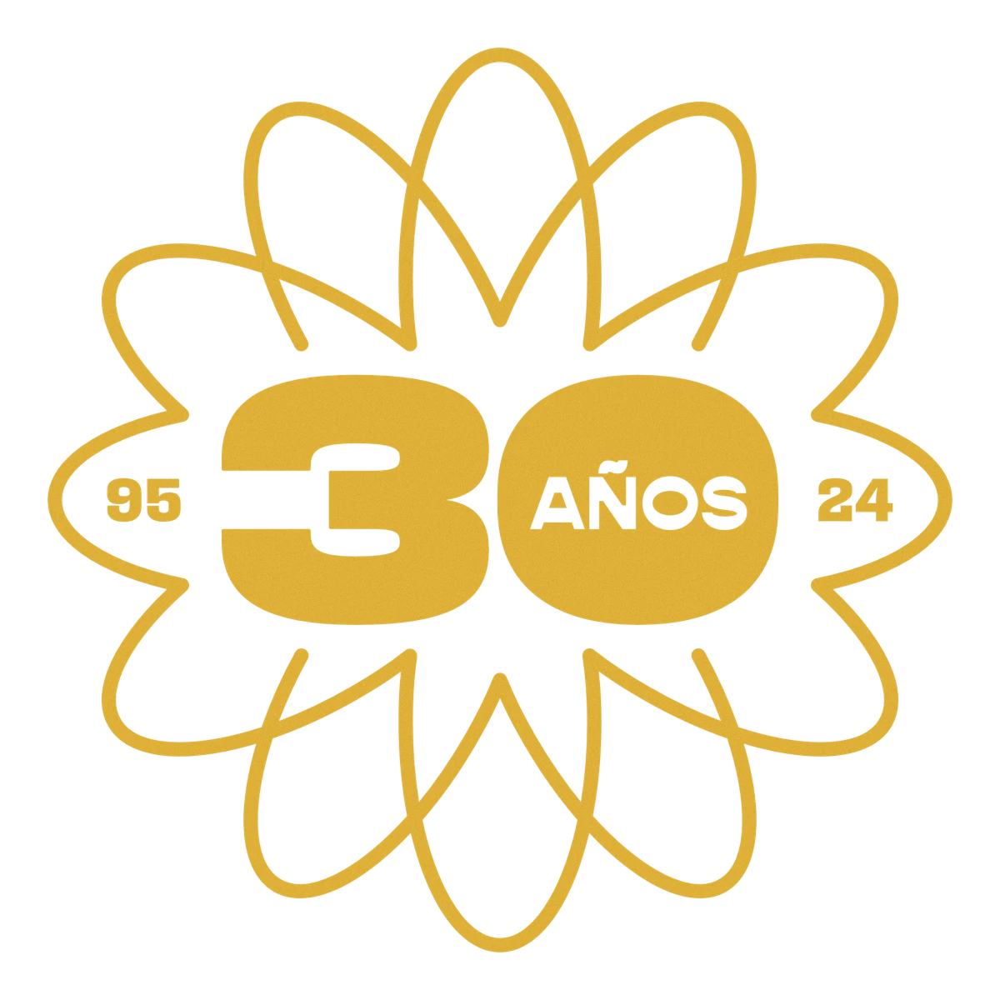
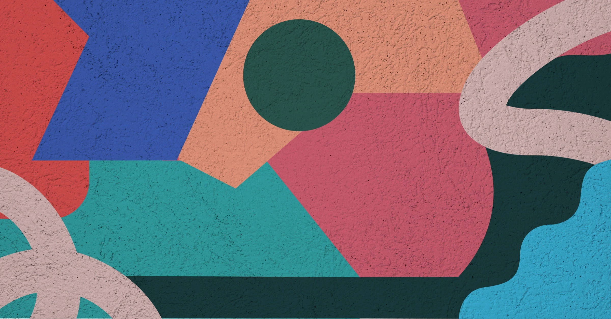
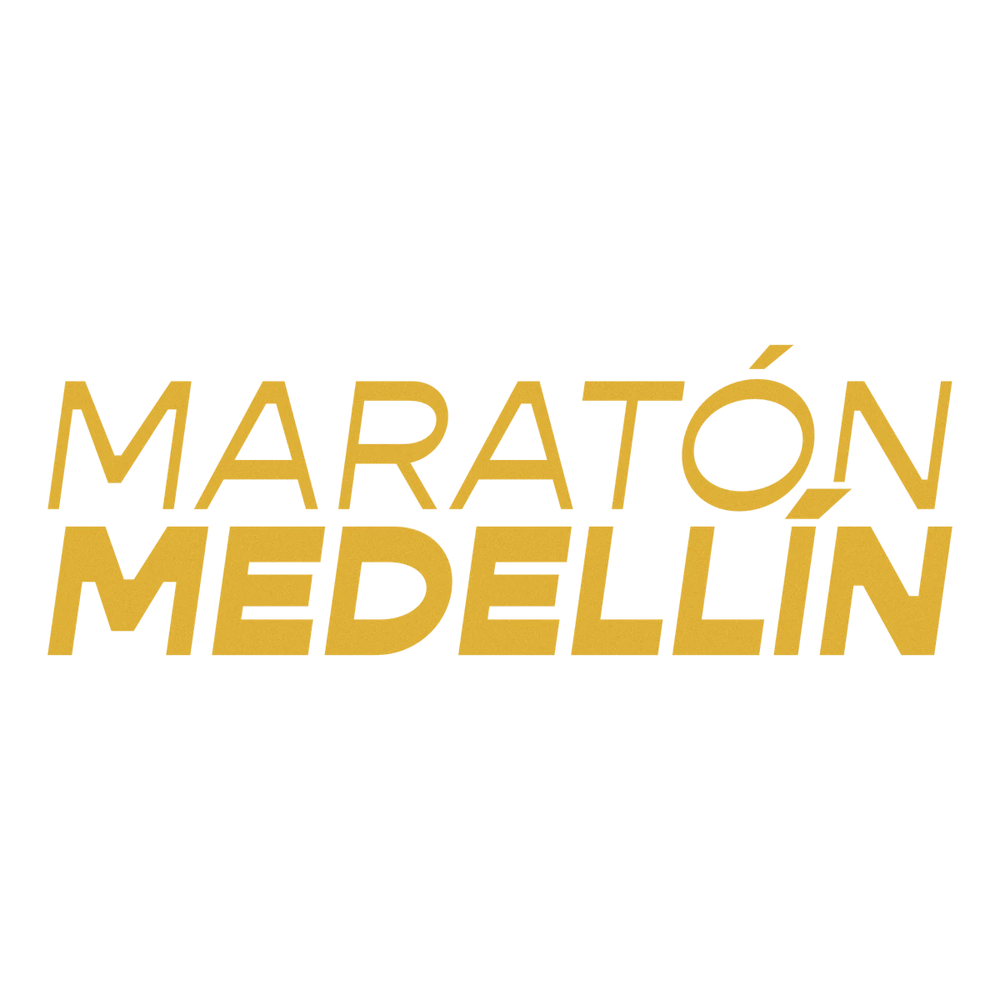
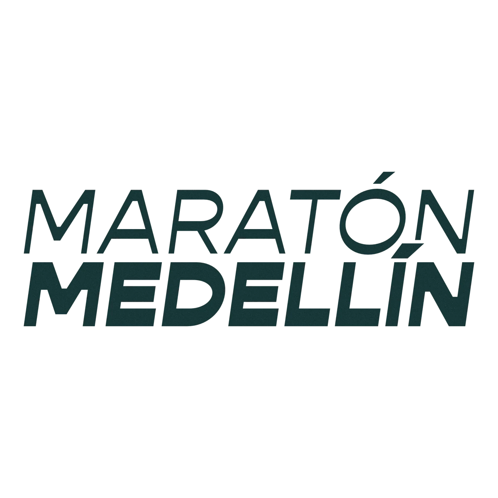
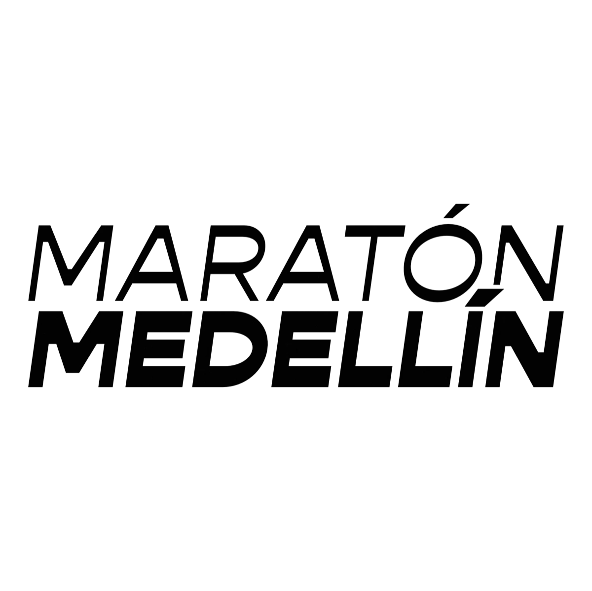
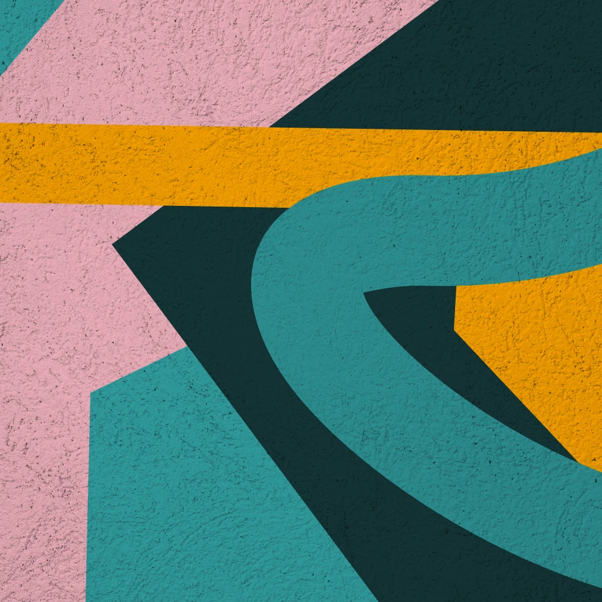
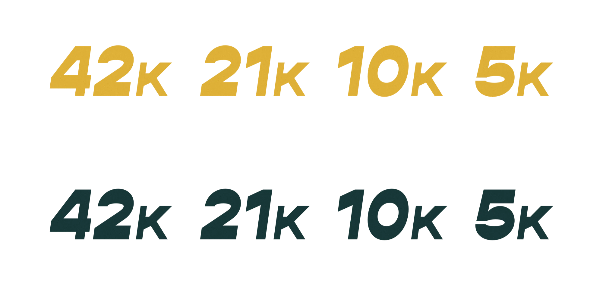
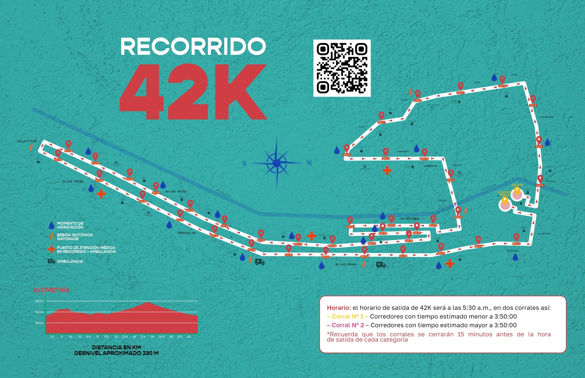

El aniversario comenzó un año antes.
En 2023, el reto fue consolidar la carrera entre las más importantes del mundo y preparar el camino hacia sus primeros treinta años.
Maratón Medellín
Una edición que convirtió la carrera en una fiesta deportiva de color, formas y arte urbano.


1 / SEP / 2024
42K · 21K · 10K · 5K
01
Historia de campaña
La presentación oficial documenta una evolución: de diferenciar la carrera en 2023 a incorporar el arte urbano como expresión viva de Medellín en 2024.
En 2023, el reto fue consolidar la carrera entre las más importantes del mundo y preparar el camino hacia sus primeros treinta años.
El análisis del universo running mostró códigos genéricos. La pregunta fue qué hacía especial a Medellín más allá de los lugares comunes.
La identidad retomó el territorio que rodea a los corredores y sumó el arte urbano como símbolo de una ciudad que cambia constantemente.
La edición treinta consolidó la carrera como un evento de ciudad y desplegó el sistema en comunicación, kit y piezas del día de carrera.

Desde 1994 · La carrera más tradicional de Colombia
30 añosLa edición del aniversario: más de 24 mil corredores celebraron tres décadas de la carrera más tradicional de Colombia.
02
Identidad · Visual principal
El aniversario, la paleta expansiva, Gopher y las cuatro distancias componen una identidad flexible y reconocible.
1 / SEP / 2024
Visual principal
Curvas, bloques, trazos y contrastes intensos construyen un escenario inspirado en el arte urbano. El fondo oficial conserva esa riqueza sin reducirla a una retícula genérica.
Paleta oficial
Tipografía
30 años corriendo juntos
MayúsculasABCDEFGHIJKLMNOPQRSTUVWXYZ
Minúsculasabcdefghijklmnopqrstuvwxyz
EspañolÁÉÍÓÚÜÑ áéíóúüñ
Numerales0123456789
Símbolos.,;:!?¿¡()[]{}+-=/&%#@°*
CombinadaAa Bb Cc 0123 — Medellín 2024
Aplicaciones de marca
Las cuatro versiones oficiales mantienen la misma estructura y responden a fondos claros, oscuros y cromáticos.




Sistema por distancia · 42K
La portada documenta la expresión de 42K dentro del sistema de color de la edición.
Variantes documentadas

Recorrido oficial 2024
Los planos oficiales de 42K, 21K y 10K publicados para la edición del aniversario, con su trazado, horarios y altimetría.
Domingo 1 de septiembre · 2024
42KSalida y meta: Edificio EPM
Av. 80, Carrera 70, Av. Las Vegas y glorieta de la calle 77 sur en Sabaneta, con regreso por la Carrera 51 (Bolívar).
Altimetría leída del perfil impreso en los planos de 42K y 21K; valores aproximados. El 5K se corrió el sábado 31 de agosto.

El plano oficial de esta distancia no incluye perfil de altimetría.
03
Campaña en acción
Los recursos disponibles permiten documentar el lenguaje de comunicación, la bolsa de Exporunners y los dorsales del día de carrera.
Durante campaña
La presentación registra vallas, pasacalles, paraderos, piezas web e Instagram. Por ahora, el archivo disponible permite mostrar el lenguaje matriz de esas aplicaciones.
Aplicaciones documentadasValla publicitaria · Pasacalles · Paraderos · Banner web · Feed de Instagram · Aviso de revista
Artes independientes pendientes de incorporar. Las aplicaciones están verificadas visualmente en las páginas 28–32, 37–38 y 41 de la presentación oficial.
Feria Exporunners
Frente y reverso de la bolsa conectan fecha, aniversario, patrocinadores y color en una pieza funcional.
Día de carrera
Selecciona una distancia para explorar las variaciones oficiales de dorsal encontradas en el archivo.
04
Créditos
Dirección creativa de Pablo Molina y ejecución en partes iguales del equipo de MIRAPALTECHO.
Dirección, acompañamiento, procesos y contribuciones creativas.
Ejecución y apoyo creativo en partes iguales: diseño, adaptaciones, aplicaciones y producción de piezas.
Identidad y campaña para Maratón Medellín 2024.
Maratón Medellín 2024
30ª edición · 31 de agosto y 1 de septiembre de 2024.
2:19:39
2:39:14
Fuentes: comunicados de prensa de maratonmedellin.com (recorridos y cifras 2024) y El Colombiano.